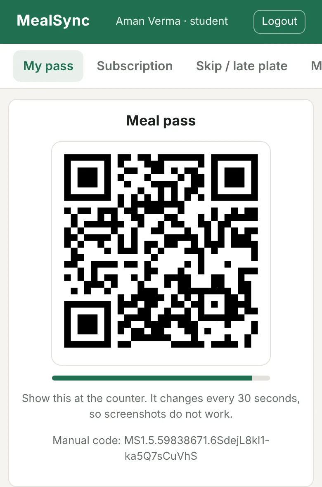
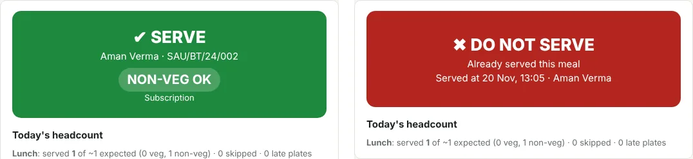
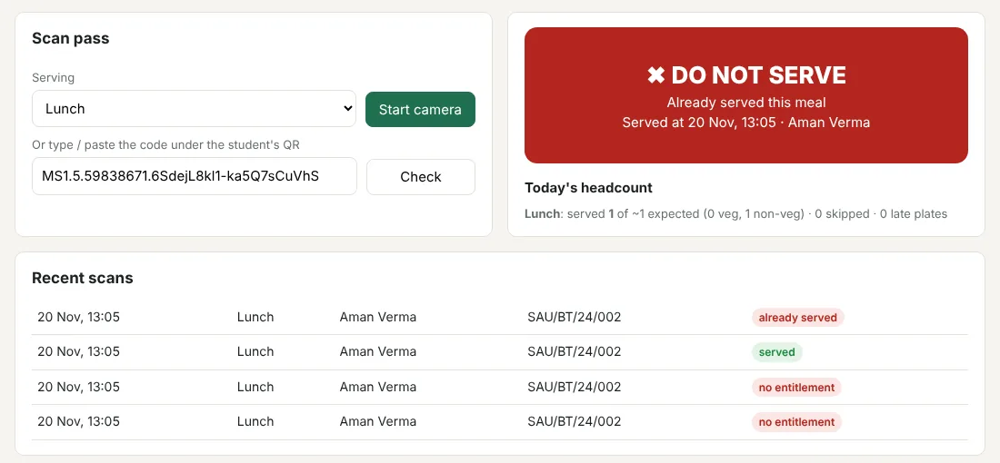

MealSync
Replacing a university mess's paper meal cards and payment screenshots with a pass that can't be shared, payments the server verifies, and a rule the database enforces.
- Status
- v1.0.0 released
- My role
- Architecture and design lead · QA
- Team
- 4 people
- Stack
- Node.js · Express · MySQL 8 · JWT · Jest
The problem
The university mess ran on a paper meal card that was checked "if and when asked", payment proved by showing a UPI screenshot, registers, Excel sheets and Google Forms. Counter staff relied on remembering faces. Nothing stopped one card feeding two people, and a missed meal was simply wasted food and money.
A pass that can't be screenshotted

Each student gets a QR pass that is signed by the server and rotates every 30 seconds. A screenshot stops working within a minute, and a forged code fails the signature check.
At the counter, staff scan it with the camera (or paste the code). The server decides, not the person at the counter.
One plate per student per meal

The rule isn't enforced by the screen. It is a database constraint, UNIQUE (user_id, meal_date, meal) on the table of served plates, so a second plate is impossible even if two counters scan the same pass at the same moment.

Payments the server checks itself
Payment follows the Razorpay order → checkout → verify flow. The server creates an order, the gateway returns a payment ID and a signature, and the server recomputes HMAC-SHA256(orderId | paymentId) with its secret before anything is activated. A screenshot of a payment app proves nothing to it.
The rest of the system
- Skip a meal before the cut-off and part of its cost is credited to a wallet; the kitchen sees a live veg / non-veg headcount.
- Late-plate reservations, day-scholar plans and pay-per-meal tokens.
- Complaint tickets that escalate, meal ratings, committee polls and a menu editor.
- Monthly reports, a CSV export that opens in Excel, and a full audit log.
| Architecture | Express, layered: routes → controllers → services → database adapter |
| Database | MySQL 8 in production, SQLite for development; 19 tables in 3NF |
| Tests | 128 unit and API tests · 95.5% line coverage |
| CI | GitHub Actions runs every push on SQLite and on a real MySQL 8 |
| Docs | SRS, use cases, DFDs, UML, architecture decisions, test plan, traceability matrix, OpenAPI spec |
Errata
The hard part wasn't code. It was the mess's own rules: what counts as late, when a skipped meal earns credit, who may cancel mid-month and what they get back. Every one of those ended up as a setting the mess office can change, because the first answer we were given was rarely the final one.
The camera scanner needs HTTPS (or localhost), which is why the counter also accepts a pasted code.
Source
github.com/Ark0B/mealsync ↗ · Software Engineering project 2026 · team: Arkodyuti Bhattacharyya (architecture, design, QA), Tarun, Ananya, Sania.